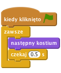
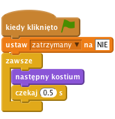
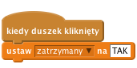
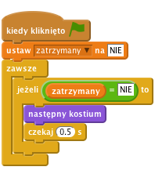
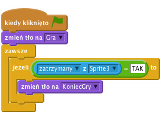

Jednoręki bandyta
Poziom 2
Zrobimy prostą grę z trzema duszkami, które się zmieniają w trakcie gry. Twoje zadanie polega na zatrzymaniu tych duszków w taki sposób, aby wszystkie miały taki sam obrazek (jak w jednorękim bandycie!).

Zaimportujmy obrazki potrzebne do gry
Skoro mamy już kostiumy, teraz sprawmy, aby duszek nosił je wszystkie na zmianę.
Skrypty.Zdarzenia i przeciągnij blok kiedy kliknięto zieloną flagę na obszar ze skryptami.zawsze z palety Kontrola i dołącz go do bloku z flagą.Wygląd i dołacz do skryptu blok następny kostium. Kliknij zieloną flagę.czekaj 1 s z palety Kontrola.Zmień czas, aby obrazki zmieniały się troszkę szybciej, ale nie za szybko - 0.5 s powinno być w sam raz. Co się stanie, jeżeli usuniemy ze skryptu blok czekaj 1 s?

Kliknij zieloną flagę.
Czy kostiumy zmieniają się z rozsądną szybkością?
Zmień ilość sekund w bloku czekaj 1 s. Jak myślisz, przy jakiej wartości gra stanie się zbyt prosta, a przy jakiej wartości będzie za trudna?
Świetnie! Potrafimy już sprawić, aby kostiumy duszka zmieniały się w nieskończoność, ale jak zrobić, aby zatrzymały się, kiedy na niego klikniemy?
Można do tego użyć zmiennej, w której będziemy przechowywać stan Duszka. Przyda się ona także później...
Kliknij na palecie Zmienne i stwórz nową zmienną. Nazwij ją zatrzymany i zaznacz, że ma być dostępna tylko dla tego duszka. Następnie odznacz haczyk obok niej, aby nie była widoczna na Scenie.
Na początku gry duszek nie został kliknięty, więc ustawimy wartość zmiennej na "NIE".

Teraz będziemy ustawiać wartość zmiennej zatrzymany na "TAK" kiedy ktoś kliknie na duszka.

Na koniec chcemy, aby duszek przestał zmieniać kostiumy kiedy zmienna zatrzymany zmieni się na "TAK". Dodaj blok jeżeli ... to i użyj bloku do porównania [] = [] (znajdziesz go w panelu Wyrażenia), aby sprawdzić czy zmienna zatrzymany ma nadal wartość "NIE".

Kliknij zieloną flagę, poczekaj chwilę i kliknij na duszka.
Czy duszek zmienia kostium, zanim na niego klikniesz?
Czy duszek zatrzymuje się po kliknięciu?
Uruchom skrypt jeszcze raz.
Czy duszek zatrzymuje się, jeżeli najedziesz na niego kursorem myszki, ale nie klikniesz? Czy zatrzymuje się, jeżeli klikniesz gdzie indziej na Scenie?
Teraz potrzebujemy stworzyć dwa inne duszki, abyśmy mogli zagrać w naszą grę!
Kliknij zieloną flagę.
Wszystkie duszki powinny się zmieniać. Spróbuj zatrzymać je na tym samym obrazku!
Niech duszki zmieniają kostium na losowy po kliknięciu zielonej flagi.
Gdy zaczynasz grę, wszystkie duszki pokazują ten sam kostium i zmieniają się razem w taki sam sposób. Gra będzie ciekawsza (i trudniejsza) jeśli będą się zmieniać w mniej przewidywalny sposób.
Kostiumy dla duszka zobaczysz, że każdy kostium ma swój numer. Możesz określić, który kostium ma założyć duszek podając nazwę kostiumu lub jego numer.zmień kostium na z blokiem losuj od (1) do (3), aby wybrać numer kostiumu.Możemy użyć dokładnie tego samego bloku w pętli zawsze tak, aby duszek zmieniał kostium na inny za każdym razem w ciągu gry.
![kiedy kliknięto zieloną flagę
ustaw [zatrzymany v] na [NIE]
zmień kostium na <losuj od (1) do (3)>
zawsze
jeżeli <(zatrzymany) = [NIE]> to
zmień kostium na <losuj od (1) do (3)>
czekaj (0.5) s](dc14c7c9677efee3b9487727127d6d15b1bf6fc9.png)
Takie same zmiany zrób dla pozostałych duszków.
Kliknij zieloną flagę. Wszystkie duszki powinny zmieniać swoje kostiumy w różnej kolejności.
Jak powinniśmy zmienić nasz skrypt kiedy dodamy kolejny kostium?
Zwiększ poziom trudności gry
Zwiększmy poziom trudności gry. Zwiększenie prędkości, z jaką zmieniają się obrazki, jest najprostym rozwiązaniem. Spróbuj czegoś bardziej wyszukanego. Oto kilka pomysłów, które mogą ci się spodobać:
Baw się wymyślając swoje własne modyfikacje!
Za każdym razem, gdy coś zmieniasz zastanów się, jaki ma to wpływ na poziom trudności gry. Czy gra robi się łatwiejsza czy trudniejsza? Jak możesz zmienić poziom trudności tak, aby był w sam raz?
Pokażmy naszemu graczowi wiadomość "Koniec gry" kiedy gra się skończy
Na początek, stwórzmy inne tło, które będziemy pokazywać kiedy gra się zakończy.
Tła. Zmień nazwę dotychczas używanego tła na "Gra".Skrypty dla sceny i spraw by tło "Gra" pokazywało się przy starcie gry.Jak możemy sprawdzić, czy wszystkie duszki się zatrzymały? Pamiętasz, że używaliśmy zmiennej zatrzymany, aby sprawdzić dla każdego duszka czy został kliknięty? Sprawdźmy zmienną zatrzymany ostatniego duszka (Sprite3), aby stwierdzić, czy gra się skończyła. Zaznacz ostatniego duszka (Sprite3) i użyj bloku pozycja x z Sprite3 z panelu Czujniki, ale zmień pozycja x na zatrzymany.

Kliknij zieloną flagę.
Czy wiadomość "Koniec gry" pokazała się po kliknięciu ostatniego duszka?
Co się stanie kiedy zatrzymasz ostatniego duszka zanim kilkniesz na pozostałe duszki?
Zmieńmy nasz skrypt w taki sposób, żeby działał niezależnie od tego w jakiej kolejności duszki były zatrzymywane.
Aby sprawdzić, czy wszystkie trzy duszki mają zmienną zatrzymany ustawioną na TAK, możemy użyć operatora i. To skomplikowany blok, który może być niełątwy do zmontowania, dlatego spróbuj i umieść wszystko razem w jednym kroku.
![kiedy kliknięto zieloną flagę
zmień tło na [Gra v]
zawsze
jeżeli <<<([zatrzymany v] z [Sprite1 v]) = [TAK]> i <([zatrzymany v] z [Sprite2 v]) = [TAK]>> i <([zatrzymany v] z [Sprite3 v]) = [TAK]>> to
zmień tło na [KoniecGry v]](a849927d74708db94afc41532a7c21a15ba27c5a.png)
Kliknij zieloną flagę.
Czy wiadomość "Koniec gry" pojawia się wkiedy wszystkie trzy duszki są zatrzymane niezależnie od kolejności w jakiej na nie klikaliśmy?
Celem gry jest kliknięcie na każdym duszku w takim momencie, aby wszystkie miały ten sam kostium. Dobrze by było pokazać wiadomość, która będzie informować gracza, czy udało mu się wygrać.
Tła i zmień tekst tła "KoniecGry" tak, by pokazywał także "WYGRANA!". Potem zmień nazwę tła na "Wygrana".Teraz potrzebujemy kawałek kodu, który sprawdzi, które tło wybrać kiedy gra się skończy. Możemy użyć bloku jeżeli ... to ... w przeciwnym razie, by sprawdzić czy gracz wygrał czy przegrał. Porównamy każdy blok kostium # (numer kostiumu) używając bloku pozycja x z Sprite tak, jak to robiliśmy wcześniej. Tym razem zamiast zmiennej zatrzymany, wybierzemy blok kostium # i sprawdzimy czy pierwszy duszek ma ten sam kostium co drugi i czy drugi duszek ma ten sam kostium co trzeci.
![kiedy kliknięto zieloną flagę
zmień tło na [Gra v]
zawsze
jeżeli <<<([zatrzymany v] z [Sprite1 v]) = [TAK]> i <([zatrzymany v] z [Sprite2 v]) = [TAK]>> i <([zatrzymany v] z [Sprite3 v]) = [TAK]>> to
jeżeli <<([kostium # v] z [Sprite1 v]) = ([kostium # v] z [Sprite2 v])> i <([kostium # v] z [Sprite2 v]) = ([kostium # v] z [Sprite3 v])>> to
zmień tło na [Wygrana v]
w przeciwnym razie
zmień tło na [Przegrana v]](e93e0e17d64524b403bc69333fa3a5a139e71fb5.png)
Kliknij zieloną flagę.
Czy pokazuje się poprawna wiadomość na koniec gry? Co się stanie jeśli numery kostiumów się nie zgadzają (na przykład kiedy kostium nr 3 pierwszego duszka to jabłko a kostium nr 3 drugiego duszka to arbuz)?
Różni ludzie różnie sobie radzą z grą. Jak możesz zmodyfikować grę, aby dopasowywała swój poziom trudności do zdolności gracza?
Jednym z rozwiązań jest dopasowanie prędkości, z jaką zmieniają się kostiumy. Możesz dodać zmienną o nazwie opóźnienie, aby kierować blokiem "czekaj". Jeżeli gracz wygra rundę, opóźnienie może się trochę zmniejszyć (co podniesie nieco poziom trudności gry). Jeżeli gracz przegra rundę, opóźnienie może wzrosnąć, co ułatwi nieco grę.
Prawdopodobnie będzie trzeba pomyśleć o użyciu innego sposobu na rozpoczęcie gry niż kiedy kliknięto zieloną flagę. Możesz wtedy przechowywać wartości w zmiennych, które będą zappamiętane pomiędzy różnymi rundami gry.
Brawo! To by było na tyle, teraz możesz się cieszyć swoją grą!
Nie zapomnij, że możesz podzielić się swoją grą ze swoimi przyjaciółmi i rodziną. Żeby to zrobić, kliknij menu Udostępnij.